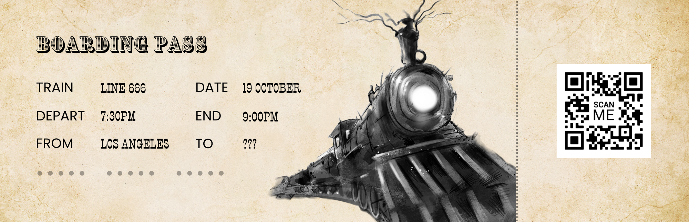

Synopsis
In 2023, my friend Todd Luoto was hired to create/curate an evening of Halloween-themed entertainment for The Autry Museum of the American West. He named it Line 666.
This eerie trailer explains it best:
He wrote three short stories to intersperse between the short films, and asked me to give feedback. Upon reading the story that would become Rushing Falls, I had the idea of reworking it to tie all of the stories together and using it as the climax.
Todd asked me if I would like to write that version of it myself, and I was excited to take it on.
It was a very fun project, although unique in the sense that it is a short story that does not entirely stand alone, and therefore is not published. I attended the live performance and was thrilled to see the whole thing brought to life in a live reading with a cast of actors, live foley sound effects, and music.
Here is a case study of the Line 666 event.